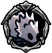

TikTik
 Uses its small, sharp claws to climb along walls and rooves.Spends its time tap-tap-tapping its way through the roads and caverns near the surface of this kingdom. If you're patient, you can wait for it to come to you and pick it off.
Uses its small, sharp claws to climb along walls and rooves.Spends its time tap-tap-tapping its way through the roads and caverns near the surface of this kingdom. If you're patient, you can wait for it to come to you and pick it off.

x 2
x 3
 x 30
x 30TikTiks are early enemies found throughout the upper reaches of Hallownest. They share similarities in size and behavior with the Crawlid, another simple enemy.

 TikTiks will crawl in one direction at a constant rate. Unlike most other ground enemies, they can crawl onto walls, and even on ceilings.They do not react to the player's presence in any way.Unlike the Crawlid, they pause briefly when hit, but do not experience knockback.
TikTiks are limited to the block they appear on, and can often be safely attacked from an area they cannot reach.They move slowly and predictably, and can often be avoided with some simple timing of jumps.Their low health makes spells and nail arts overkill. Any upgraded nail will kill a TikTik in a single hit.
TikTiks will crawl in one direction at a constant rate. Unlike most other ground enemies, they can crawl onto walls, and even on ceilings.They do not react to the player's presence in any way.Unlike the Crawlid, they pause briefly when hit, but do not experience knockback.
TikTiks are limited to the block they appear on, and can often be safely attacked from an area they cannot reach.They move slowly and predictably, and can often be avoided with some simple timing of jumps.Their low health makes spells and nail arts overkill. Any upgraded nail will kill a TikTik in a single hit.
TikTiks can be found the following areas: